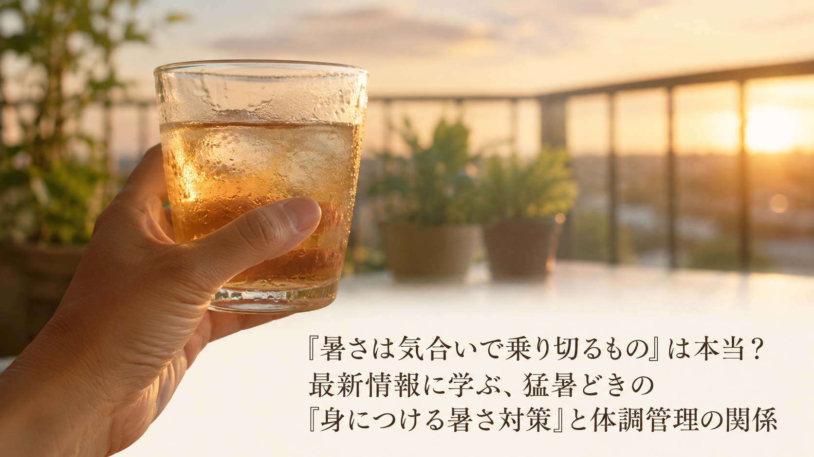

「暑さは気合いで乗り切るもの」は本当？最新情報に学ぶ、猛暑どきの『身につける暑さ対策』と体調管理の関係
「暑いのは我慢するもの」「冷房に頼りすぎるのも良くない気がする」——そう感じながら夏を過ごしている方も多いのではないでしょうか。2026年6月、暑さ対策商品を手がける企業が、身につけて涼をとるタイプの冷却グッズを実際に体験できる催しを都内で開くと発表し、注目されました。今回は中高年の方にも分かりやすく、そのポイントをご紹介します。

紹介されている「身につける暑さ対策」という考え方
- 猛暑日が続く時期は、暑さ対策グッズへの関心が高まる一方で、オンラインでは実際の使用感が伝わりにくいという課題があると説明されている。そのため、実際に手にとって体感できる機会を設けることが、選ぶ際の助けになると紹介されています。
- 体を冷やす工夫には、全身を冷やす・部分的に冷やす・持ち歩いて使うなど、複数のタイプがあると紹介されている。使う場面や過ごし方に合わせて選べる選択肢が増えていることが、日常に取り入れやすさにつながるとされています。
- 冷やしすぎない温度帯を意識した設計が、長時間の使用でも体に負担をかけにくい工夫として挙げられている。冷たすぎる刺激を避けながら、自然な涼しさを保つ考え方が紹介されています。
中高年の私たちが意識したいこと
この情報が伝えているのは、暑さは気合いや我慢で乗り切るものだ、ということではなく、体を冷やす工夫を上手に取り入れることが、暑い時期を穏やかに過ごす助けになる、という視点です。中高年は暑さやのどの渇きを感じにくくなることがあるともいわれており、日々の生活の中では、次のような一般的に知られている習慣が、体調管理の助けになるとされています。
- のどの渇きを感じにくくても、時間を決めてこまめに水分をとる
- 外出時や屋外での作業時には、冷却タオルや保冷グッズなど身につけて涼をとる工夫を取り入れる
- めまいや強いだるさ、体温の異常など体調の変化を感じた場合は、無理をせず涼しい場所で休み、必要に応じて医療機関に相談する
※上記は一般的な暑さ対策としてよく紹介される内容であり、熱中症など特定の症状の予防や治療を保証するものではありません。体調に不安がある場合は、無理をせず医療機関にご相談ください。
本記事は、ノマズライフ株式会社が2026年6月22日に発表したプレスリリース「話題の涼しさ、体感できます。特許技術搭載の冷却ベストがCHOOSEBASE SHIBUYAに登場｜7月7日（火）〜13日（月）西武渋谷店でPOP UP開催」の内容を要約・紹介したものです。詳しい内容は出典元をご確認ください。
出典：ノマズライフ株式会社 プレスリリース（アットプレス配信、2026年6月22日）
出典：ノマズライフ株式会社 プレスリリース（アットプレス配信、2026年6月22日）
本記事は健康に関する一般的な情報提供を目的としたものであり、医学的な診断・治療・予防を目的としたものではありません。記載内容は出典元の見解の要約であり、当社（株式会社BISII）独自の見解や、当社が販売する製品の効果を示すものではありません。気になる症状がある場合は、医療機関へご相談ください。
当社では、日々のコンディショニングをサポートする空間電位ケア機器「DENBA Health」をご紹介しています。
DENBA Healthについて見る最終更新日：2026年7月6日